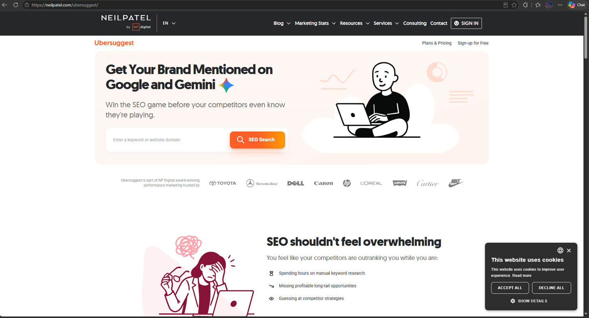
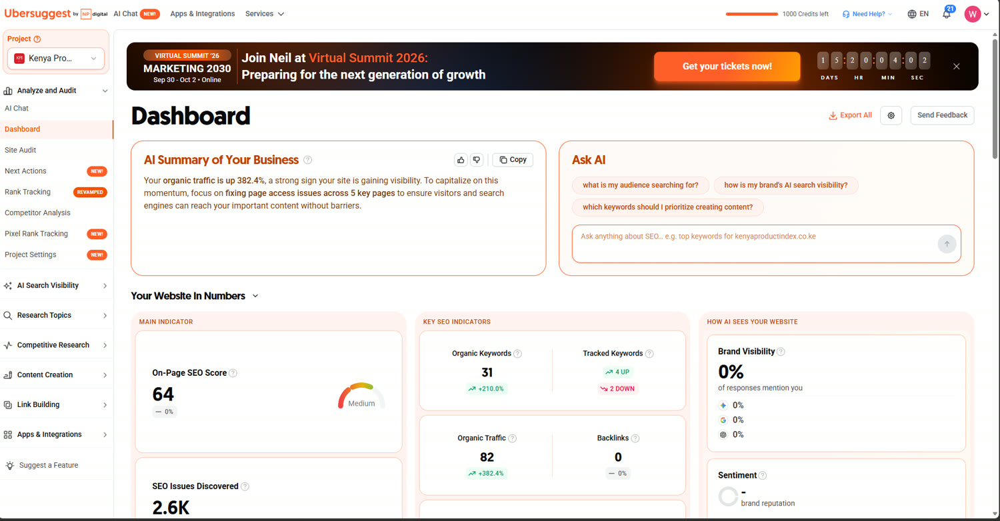
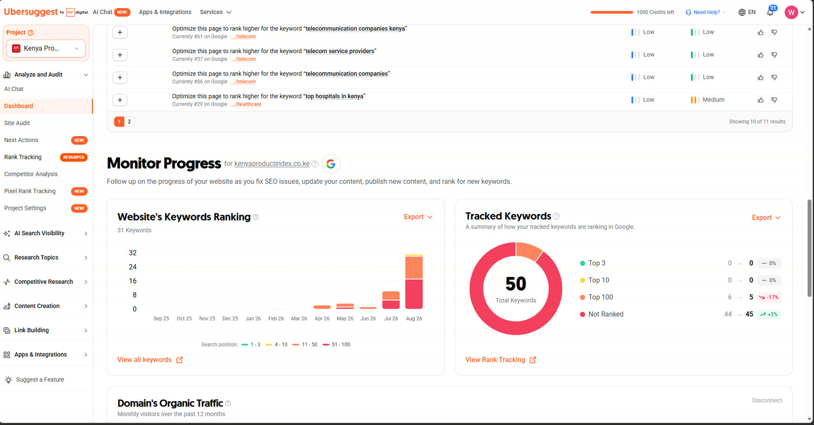
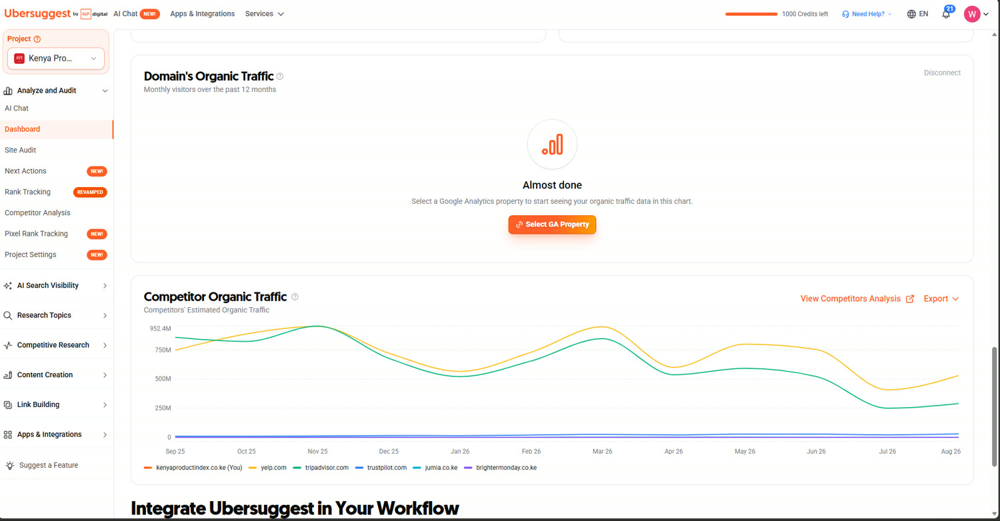
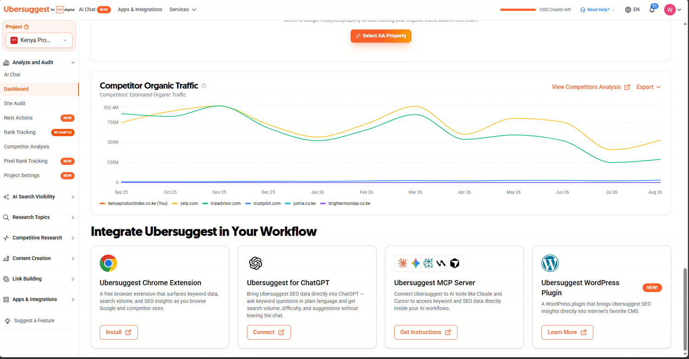
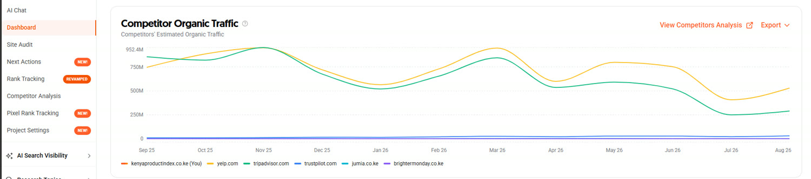
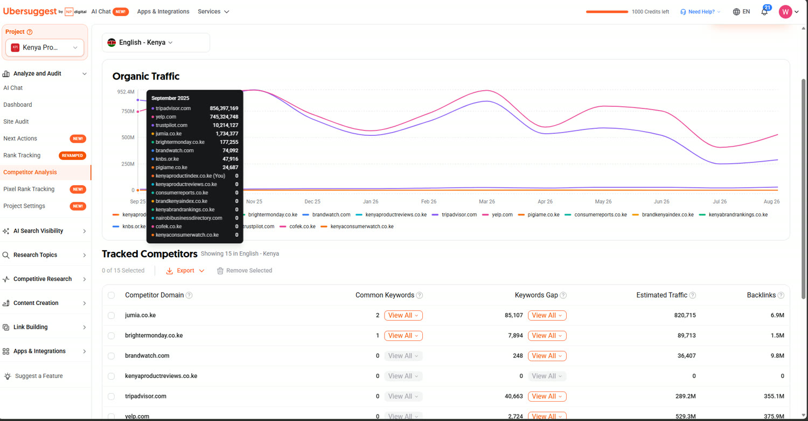

Keyword research, search visibility and social media management, with Facebook as the part I know best. Most small businesses here are already trying to sell online and are mostly guessing, which is a solvable problem.







Keyword and visibility research
The work starts with what people actually type, which is almost never what a business thinks they type. A shop describes itself in the language of its trade and its customers search in the language of their problem, and the gap between those two is most of the traffic that never arrives.
From there it is ordinary and unglamorous: what the site could realistically rank for, what it cannot, which competitors already hold the terms worth having, and what the pages need to say to be about the thing they claim to be about.
Facebook is where most of the buying conversation in this part of the country actually happens, so it is where I have spent the most time. Running a page properly, posting to a schedule a business can sustain after I leave, responding to people who comment, and reading the numbers well enough to stop doing whatever is not working.
The honest version of this service is that consistency beats cleverness. A page that posts something useful every week will outperform one that produces a brilliant campaign twice a year, and most of the job is building a habit somebody can keep.
Kenya Product Index is a search product before it is anything else. The entire business rests on ranking for terms like best bank in Kenya, which means the pages are generated ahead of time, the sitemap is built from the database rather than frozen at deploy, and a stale robots rule blocking the crawler is not a small bug but the whole thing switched off.
That is the version of this work I trust most, because the results are not a screenshot of a tool. They are a product whose existence depends on the search work being right.
Digital Marketing Studies is one of the five courses every learner on Beyond Form 4 takes, around twenty hours and ten topics, before anyone specialises. It is deliberately in the common section rather than an elective: a graphic designer who cannot explain why a post did not reach anyone is missing half the job.